Berck 2007

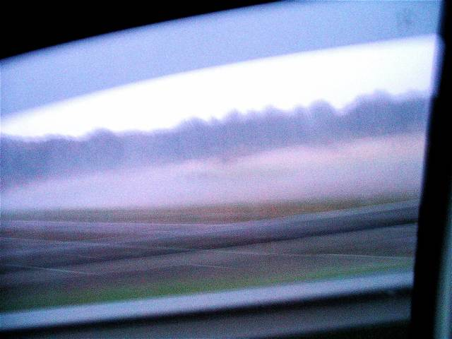
Berck, le super festival, 10 jours de cerf-volant ! Un temps pas toujours terrible, même que des fois il neige ! Sur la route, à l'aller, des bancs de brouillard pas très encourageants : c'est reparti pour une semaine de galère ?

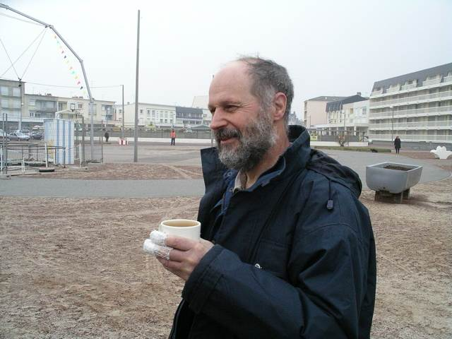
Hé ben, pas du tout, ce sera une année faste avec même un jour de Pâques idéal ! Pour l'instant, premier lever sur le parking des campings-cars. Bruno tient son petit café comme il peut, il a laissé de sa personne dans une machine à doigts... euh, non, à bois (dit-il) !

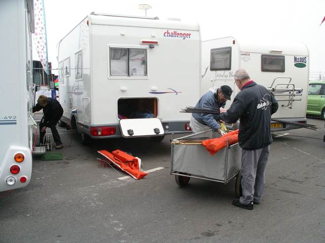
Les jardiniers préparent tout pour les jardins du V... C'est loin, il faut s'équiper en conséquence et les oublis se paient d'un km à pied !

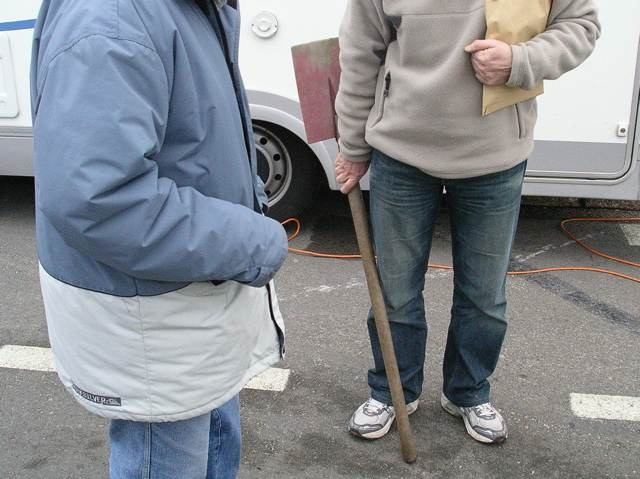
Tiens, même une bêche. Nous prépareraient-ils une surprise de taille ?

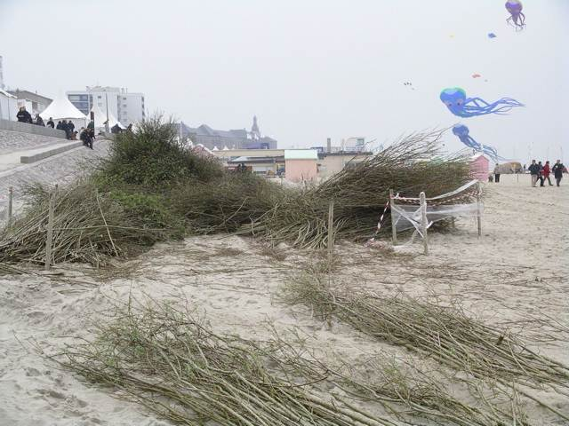
A l'autre bout, sur la plage un tas de branches de saule attend. Et pas un petit tas, 20000 branches issues des saulaies municipales et gracieusement déposées là. Y a plus qu'à !

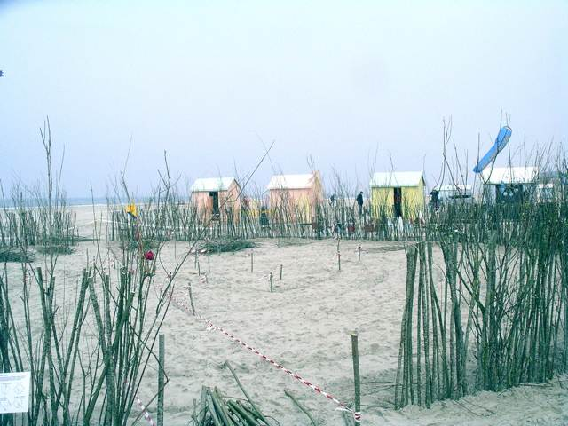
Les maîtres d'oeuvre sont les Ferment. Ils tracent, ils fédèrent, ils mobilisent... On creuse des tranchées, on plante (enfin, moi, je bosse une heure et après je vais voler... Eoliste, métier de fous). Au soir, le tour du labyrinthe, puisque c'en est un, est terminé.

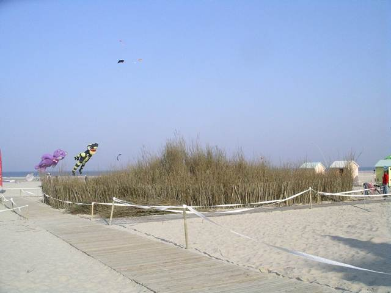
La grande question ensuite : combien de jours pour terminer ? Ca bosse dur et longtemps le dimanche, et le soir, c'est terminé ! Plus qu'un peu de finition le lendemain et c'est bon, ouf ! De l'extérieur, on ne voit qu'une pyramide un peu conique, et touffue.

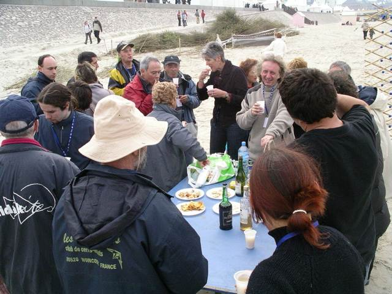
Bon, c'est fini, on a une semaine pour s'en remettre, il faut fêter ça ! Les bouteilles sortent de partout, il en restera encore trop le dernier jour !

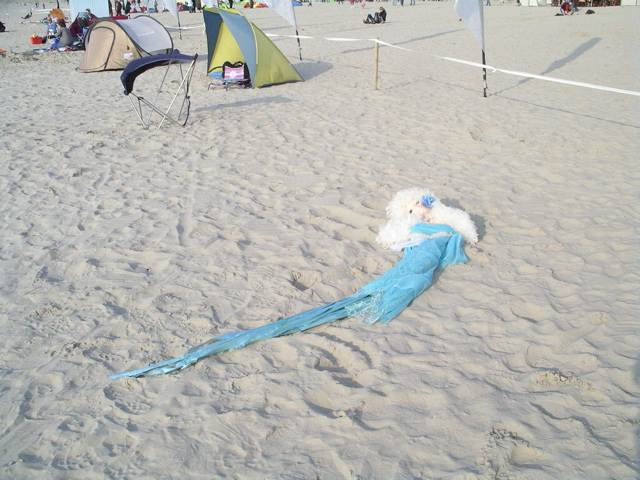
Je retourne au cerf-volant. Jean-Claude fait voler son papillon à fée, mais la fée est restée sur le sable, faute de vent....

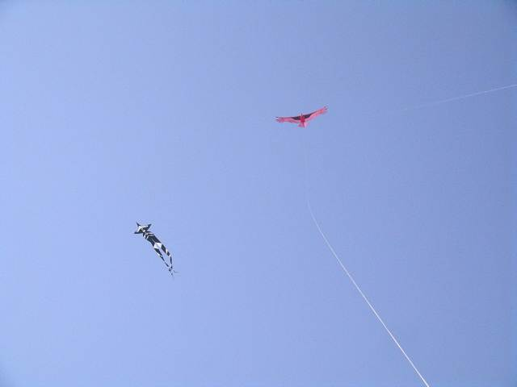
Moi, je sors mon Condor. Le soir plus personne, le vent se renforce, je déroule 200 m... mais quand je veux redescendre, une aile se replie et la bête, voyant qu'il n'y a plus personne sur la plage, se jette sur les éoliennes des Flics. Pas trop de casse, juste à démêler...

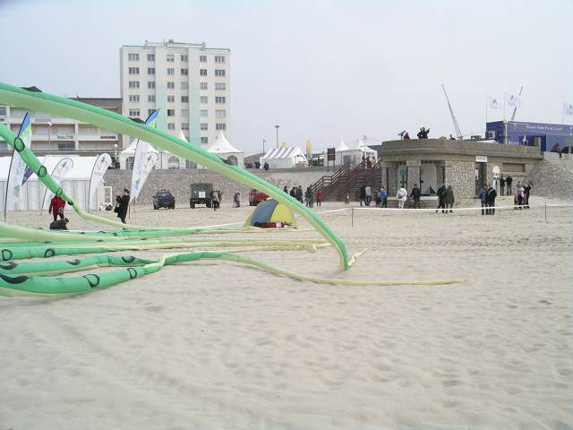
Le premier jour, je me suis installé devant le parking des camping-cars. Mais j'ai été menacé par des tentacules monstrueux qui voulaient emporter ma tente dans les azurs, alors j'ai déménagé vers les JdV, plus lointains mais plus accueillants.

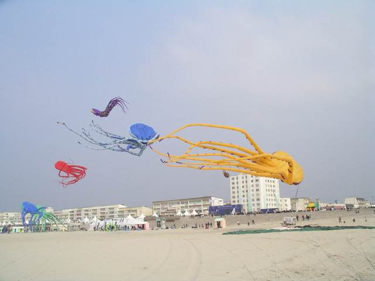
A part qu'il est dommage de consacrer un festival à un seul créateur-marchand, les pieuvres, c'est quand même une belle et spectaculaire invention, même si elles sont toujours pendues après des "pilotes", ce qui leur retire de facto la qualité de cerf-volant !

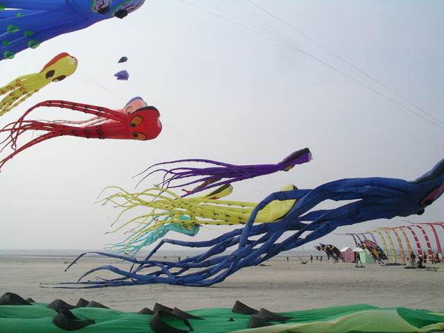
Mais un envol massif comme on en a vu (elles ne volent pas tous les jours, il leur faut leur vent...), c'est sacrément impressionnant, et encore plus, vu de près....

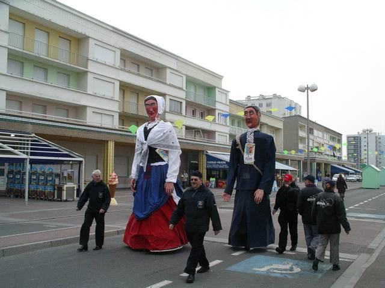
Sur la promenade, toujours du nouveau à voir. Les Géants du Nord se promènent tranquillement !

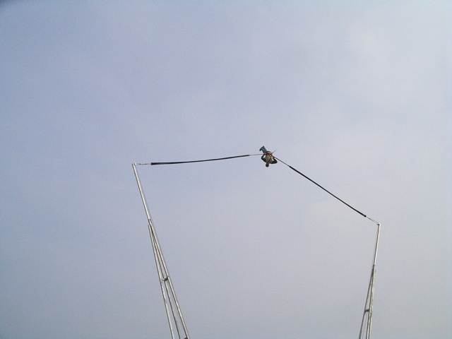
Le système d'éjection est très haut point et la verve des bonimenteurs ne connaît pas de limite...

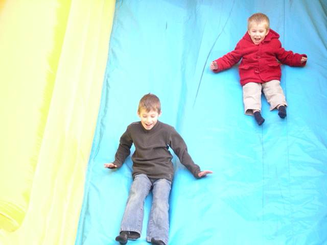
Les toboggans gonflables sont déployés pour la plus grande joie des enfants (et des parents qui voient quelquefois avec soulagement leurs enfants se défouler ailleurs que dans leurs jambes) !

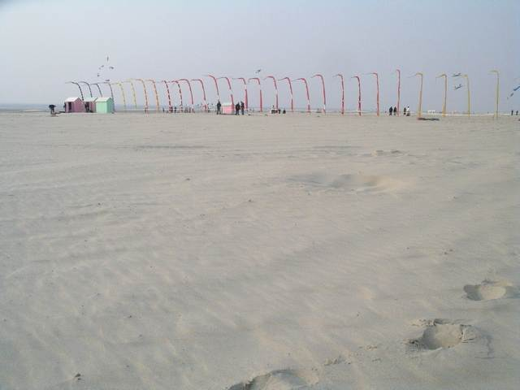
Hier et cette nuit, il a bien venté et la plage est redevenue presque vierge...

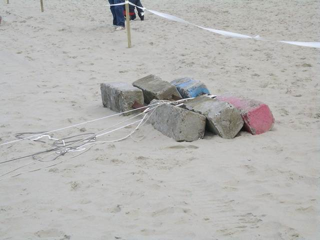
Il avait fallu tripler les attaches, pourtant des traverses de chemin de fer en acier et béton !

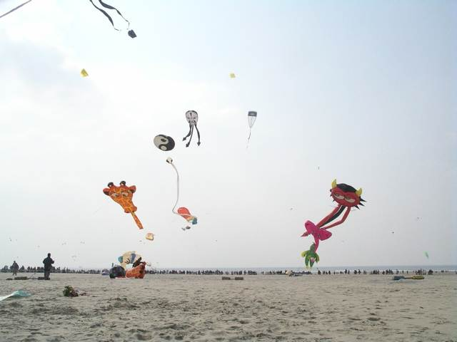
Mais ce matin, on peut déployer tout un petit zoo...

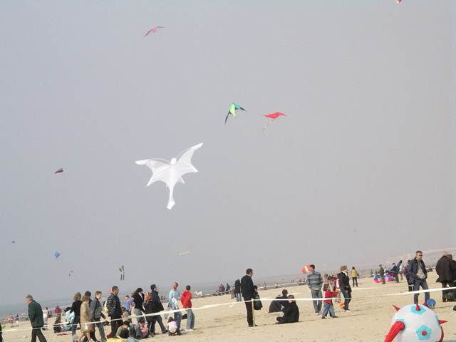
De plus en plus de gonflables, sur le festival. Il faut chercher les vrais cerfs-volants. Celui-ci est très joli et... aérien !

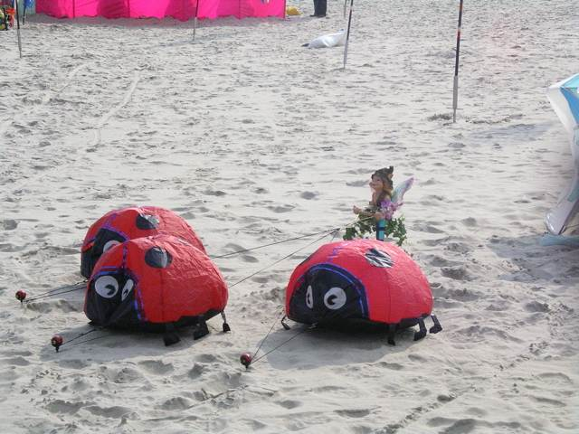
Jean-Claude a mis ses coccinelles à l'attelage...

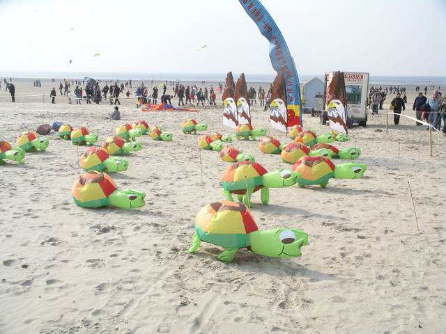
Et les tortues font ce qu'elles peuvent. Pour les voir se dresser sur leurs pattes, il faut quand même pas mal de vent...

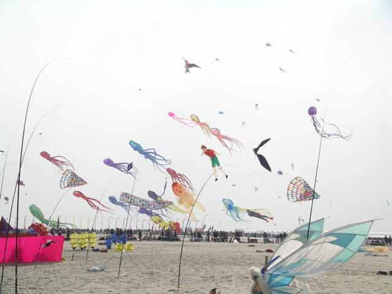
Là-bas, les pieuvres se sont réveillées, j'en compte 16 sur la photo. Ici, c'est plus calme. Les bols à trous-trous de la bande à Rolf tournent furieusement, et le papillon de Jean-Claude est au piquet...

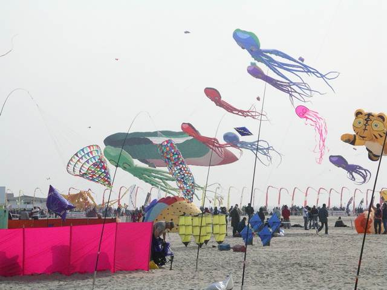
Derrière les pieuvres, le recordman du Koweït (17 818 km2 - le pays, pas le CV) s'est soulevé (le CV, pas le pays !), profitez-en, ce ne sera pas souvent !

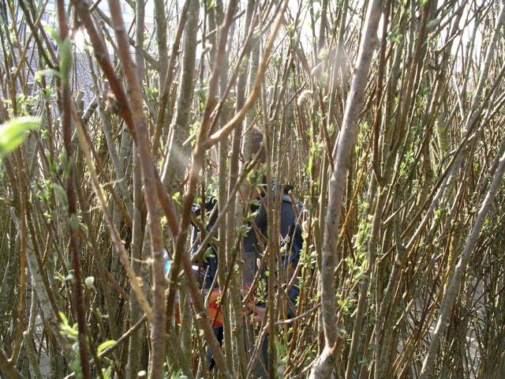
Dans le labyrinthe, la circulation est constante. Le milieu est plus dense que le bord, mais n'empêche pas de voir les autres pèlerins. Car ce labyrinthe ne comporte pas de choix, c'est un chemin mystique comme ceux des cathédrales, qui symbolise un pèlerinage (vers les idéaux du cervolisme, sans doute...)!

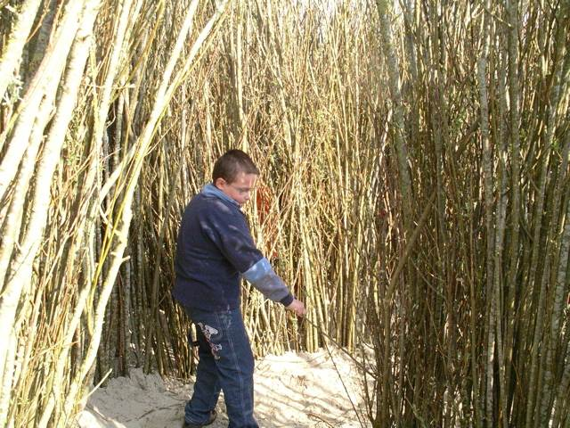
Pour les enfants, c'est très amusant, certains sont repassés 10 fois, mais ça ne les empêche pas de détruire un peu, il faudra constamment entretenir et reboucher les brèches...

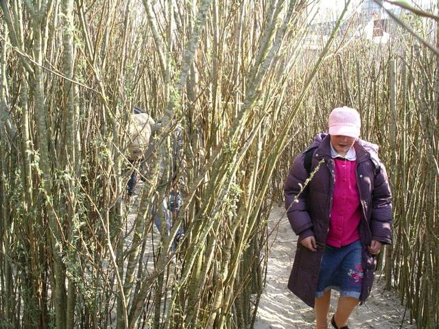
Les adultes aussi trouvent du plaisir à le parcourir, on n'a vu personne en sortir avec l'air blasé...

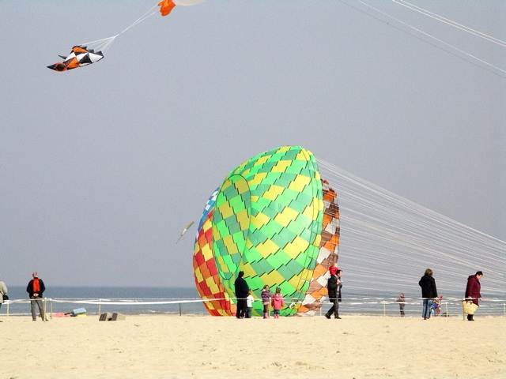
Sur la plage, toujours du vent de terre, turbulent. Les grands bols ont du mal à se gonfler et à décoller !

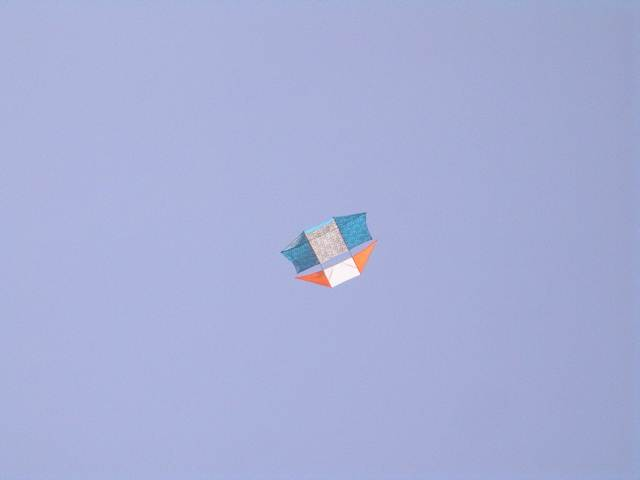
Christian a monté son Dopero modifié. Il faut le voir : il y a 2 petites dérives divergentes sous le centre à l'arrière. D'après lui, elles stabilisent la bête, ce qui est primordial pour l'aérophoto.

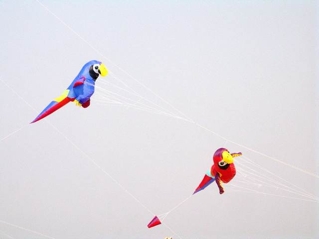
On voit aussi des perroquets géants et colorés posés sur une ligne...

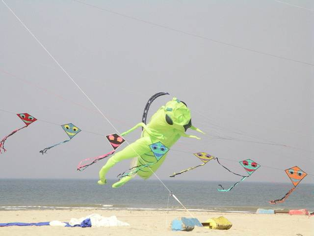
Devant une arche amusante, une espèce de grillon vert essaie mal de se maintenir en l'air...

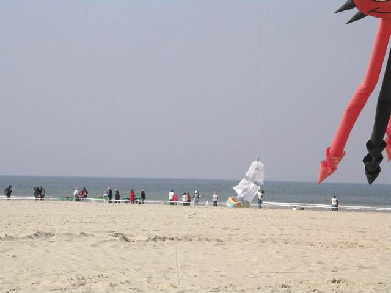
Plus loin, une sorte de kayak à voiles carrées n'a pas plus de succès...

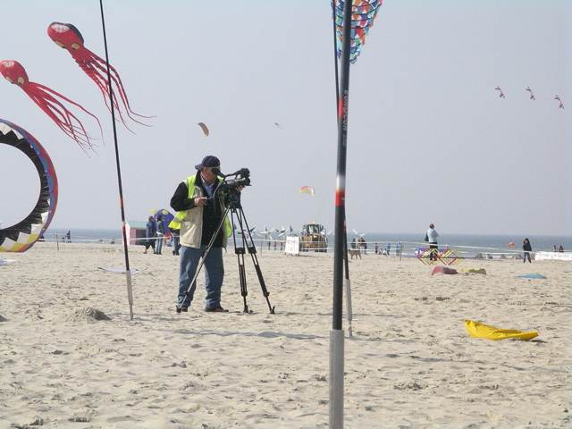
Pourtant, la télé est là, faudrait faire un effort !

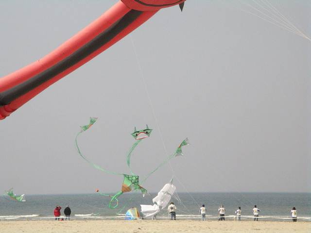
Les 4-ligneurs mettent au point une sorte de dragon ou de bonhomme pilotable. Le corps est un monofil, les membres et la tête sont positionnés par des révos modifiés... Ca marche, mais il faudrait améliorer encore l'aspect, et prévoir une chorégraphie adaptée.

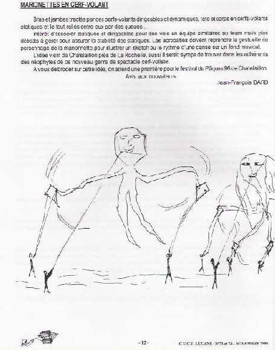
Je suis quand même content de voir se réaliser cette idée intéressante lancée dans le Lucane du CVCF il y a plus de 10 ans, mais jamais concrétisée...

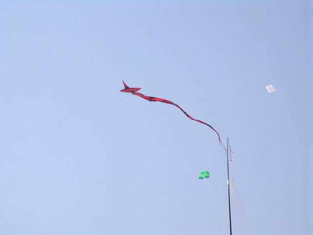
Une sorte de Jangyang moderne traîne sa longue queue, pendant que le monofil gonflable de Peter Lynn (enfin un vrai cerf-volant) montre une stabilité exemplaire...

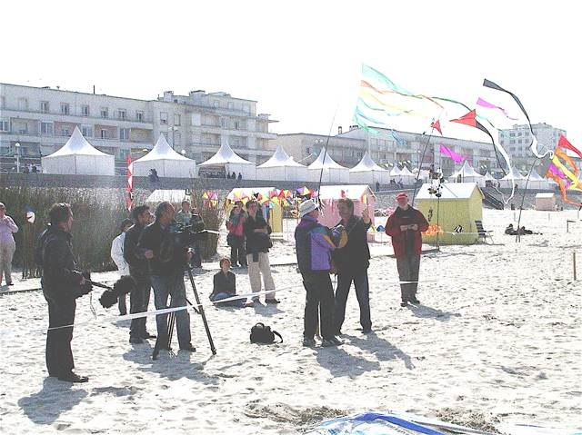
Gérard est venu donner un coup de main à Christian Bécot pour ses prises de vue, geste peu courant ! Ah, j'avais pas vu, il y a une caméra !

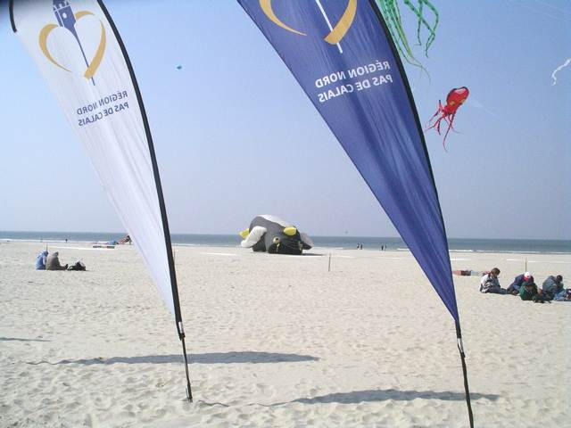
Les gonflables ne font même plus semblant d'essayer de voler. Ce pingouin se vautre dans le sable sans vergogne...

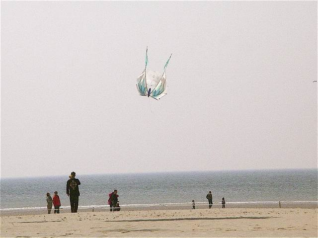
Jean-Claude a réussi à faire voler son papillon, mais cette fois, le vent est un peu fort et les ailes se touchent !

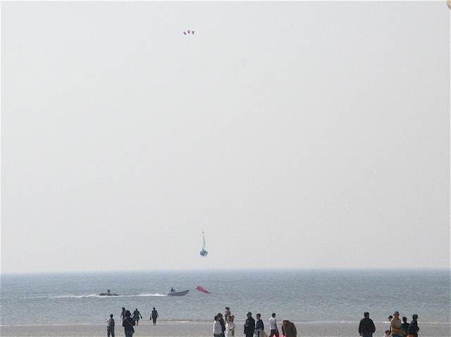
A force de se mélanger, il arrive que les CVs se coupent, ou arrachent leur piquet. Le vent de terre n'est pas bon, entre autres, pour la direction prise... Heureusement, il y a des bateaux pour rattraper ça, car un cerf-volant en l'air et un dans l'eau, ça ne tombe pas avant l'Amérique !

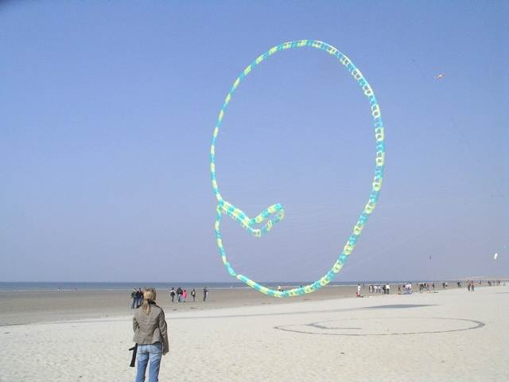
Amusant encore, ce grand serpent qui tournait à grande vitesse, avec un peu d'instabilité entraînant des emmêlages complexes...

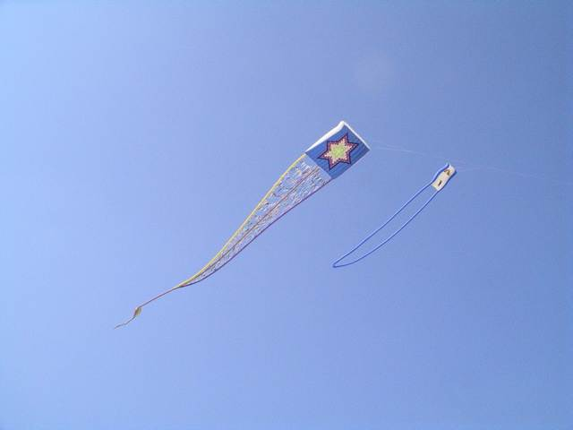
Des flow-forms gigantesques traînent des queues encore plus gigantesques... Ca doit demander des moyens importants et des équipes idem !

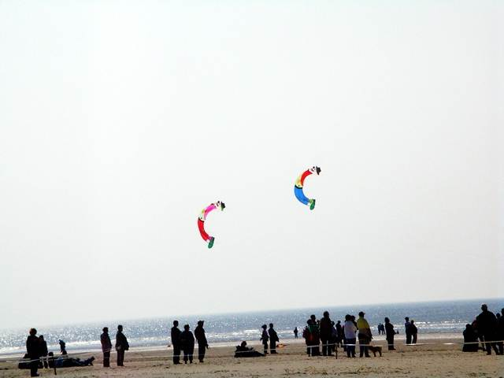
Les 4-lignes ne se reposent pas sur leurs lauriers, témoins ces clowns courbes qui font de la voltige ensemble... !

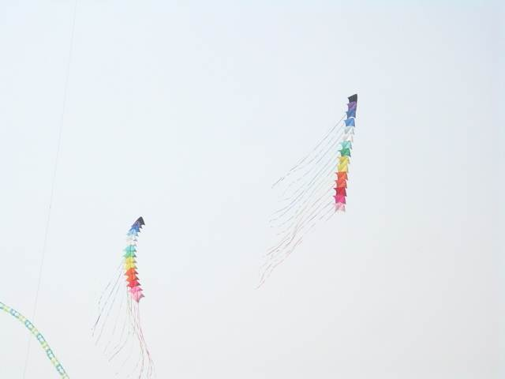
On revoit aussi avec plaisir ces trains arc-en-ciel de pilotables et leurs longs rubans qui emplissent l'espace. Le show n'est pas toujours facile, car quand ça commence à se mélanger, le show est fini pour les intéressés...

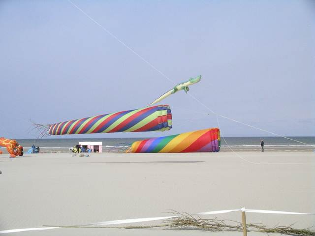
Dans le géant, on a revu aussi des turbines imposantes...

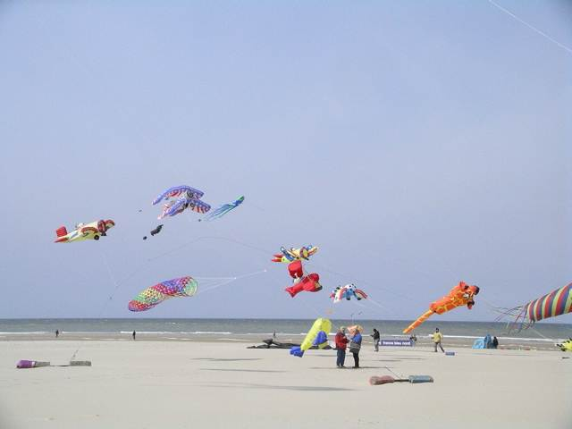
Rolf a sorti son bestiaire qui ne comprend pas que des bêtes mais aussi pas mal d'avions gonflables et pilotables, mais qui se tiennent bien, attachés à une arche...

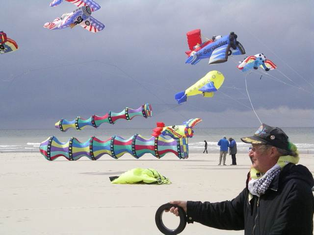
Jean-Claude vole toujours, devant ces bizarres manches à air en forme de diabolos entassés et les avions de Rolf et sa bande...

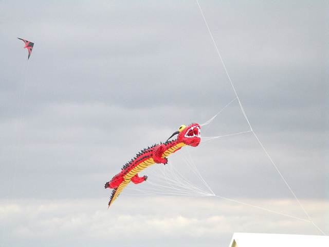
Un nouveau venu, un moloch très épineux

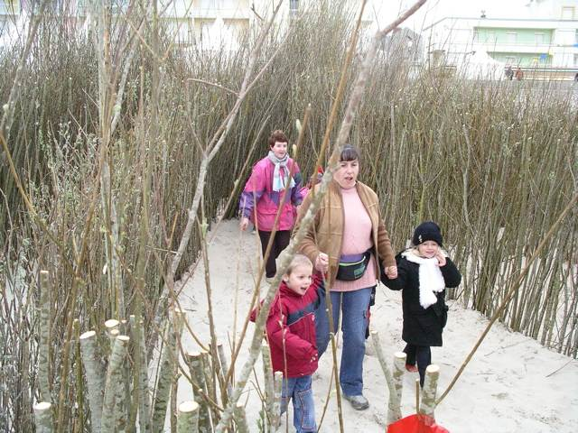
Dans le labyrinthe, les visiteurs circulent toujours... et ont toujours l'air ravis !

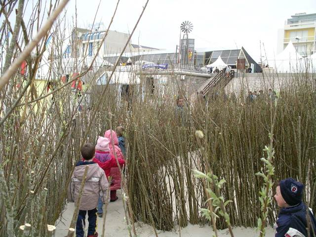
Quand on arrive à ce point très extérieur, on a l'impression d'être à la sortie. En fait, on n'a pas fait la moitié, on va repiquer vers le centre !

Cette petite fille suit avec son doigt sur la photo de Bruno, mais c'est plus difficile qu'à pied !

Les jours de fort vent, on trouve plusieurs de ces boîtes carrées, résistantes et stables...

Celle-ci, sur diagonale, est encore plus tendue et plus stable, elle devrait résister à un ouragan...

Pour voler sans casser (c'est long, Berck, faut s'économiser !) j'ai sorti mon Rokkaku, très creusé, et j'ai encore rajouté une queue (oui, c'est sa housse...) !

La bande à Rolf a sorti des drapeaux, c'est joli, ça fait des vagues. Et puis ça accapare bien une portion de terrain !

Ces poissons sont toujours d'une grande stabilité, même s'ils se couchent quelquefois par fort vent. Mais ils repartent seuls...

Emmanuel a sorti son Jardin des Chats, qui s'accroît sans cesse...

Il en a même un qui se couche sur ses genoux...

Le Musée de Berck a ressorti ses poissons, mais en fait, ils sont toujours nouveaux : le musée fournit les galets de craie et les outils, à vous de créer !

Patricia Ghesquière a aussi monté son jardin, très divers et souvent renouvelé... !

Cette année, il comporte de petites grilles de plastique montées en trains...

Oh, une ombre inquiétante court sur le sol, sans doute un rapace...

C'est mon faucon-crécerelle, qui vole, mais ne marche pas (encore ?) comme je le voudrais : il devrait faire le Saint-Esprit en battant des ailes. Ca viendra (j'espère, mon Condor l'a bien fait un moment...), en tout cas il résiste bien au vent !

On quitte un peu la plage. Les Allemands sont arrivés avec leur camping-car semi-remorque. Pas beaucoup de chances de voir ça certifié par les Mines en France... !

Sous la tente, grande innovation, une balise wi-fi : on peut consulter le site RICV en direct (il est mis à jour quotidiennement) ou relever ses mails...

C'est seulement difficile de travailler discrètement...

Dans la tente, on est bien abrité, et la paroi vitrée offre un spectacle de choix sur la plage et le coucher de soleil...

Ensuite, dîner au restaurant, grâce aux tickets fournis par l'organisation aux cervolistes ou éolistes valeureux...

Ensuite, retour à la tente pour la soirée Country... Je n'aime pas trop leurs choix musicaux, mais en tout cas c'est entraînant. Sauf qu'on ne peut pas participer, les pas sont beaucoup trop compliqués.

Pendant le spectacle, il y a des dames qui se reposent quand même, ça doit être assez fatiguant !

Renaud, lui, ne lève pas la tête de son ordinateur. Il vogue sur des forums divers...

Peter, lui, suit le spectacle qui a l'air de lui faire plaisir.

Des charistes eux, ont trouvé la solution pour transporter les chars sans prendre de place sur le logement...

Moi, j'ai une place réservée sous mon arc de triomphe. C'est Jean-Claude qui a assemblé les branches, mais je les ai plantées...

Patrick étudie le bridage très cabré du Roloplan que Patricia lui a offert pour son anniversaire !

Le jeudi, c'est le jour des écoles. Il en débarque de partout, avec des petits cerfs-volants en nette progression sur ceux des années précédentes qu'il fallait bricoler sans arrêt pour les faire rester en l'air quelques secondes !

Là, les cerfs-volants sont blancs, on ne peut pas les rater, au soleil...

Encore pas mal de CVs en l'air, mais on dirait que l'heure du casse-croûte est arrivée...

Ca a l'air reparti, avec des CVs plus colorés...

Et à gauche, c'est pareil, tous les terrains reçoivent leur dose d'écoliers, ça en fait, des cerfs-volants en l'air !

Pour que vous compreniez bien, j'ai fait quelques photos du labyrinthe avec ma nacelle photo minimale... Le labyrinthe est enclos dans un cercle et ne comporte qu'un chemin lové sur lui-même.

A l'intérieur, on ne voit que les parois voisines, sauf au bord extérieur assez transparent et bas...

Les voies circulaires sont assez étroites, les voies radiales sont beaucoup plus ouvertes, puisque quasiment triangulaires...

Roberto et Rina sont venus d'Italie avec un bouillonnement d'idées et d'activité... Leur JdV comprend toutes sortes de moulinets de matières naturelles : bambous, feuilles, gousses, plumes, coquilles, etc...

Ici, 2 demi-noix de coco gréées sur une pointe constituent un moulin efficace...

Plus loin, un moulinet composite de feuilles, de plumes, de bambous tourne devant un filet, agrémenté de bouchons de plastique colorés...

Joël maîtrise maintenant parfaitement sa plaque de laiton et sait produire les fascinantes arabesques qu'il veut grâce aux vibrations imprimées par l'archet en un point judicieusement choisi.

Joie, un nouveau cerf-volant ! Il supporte sans problème le vent fort, mais est plutôt typé indoor, on peut lui donner une impulsion pour lui faire accomplir des trajectoires variées autour du pilote.

Jean-Marc prépare son tout nouveau Jessica en toile type K-anorak. Il volera très bien dès le premier vol, mais est un peu souple pour les vents forts.

Mais quelle est cette étrange fumée ? Ben, c'est du brouillard qui se lève tout à coup...

Le vent est faible et tourne à la brise de mer, le brouillard en profite pour monter sur la plage puis sur les immeubles, à droite...

...et à gauche, c'est encore pire !

C'est par passages, la très grande tente de certains compétiteurs est encore visible... !

Mais la raie, là-haut, commence à disparaître...

Mon Harfang blanc commence aussi à être gagné.

Le week-end arrive, tout a une fin... La queue s'allonge démesurément sous la tente pour le déjeuner...

Pas de temps à perdre, retour sur le terrain. Cette chauve-souris à l'armature très graphique vole en 4 lignes mais a l'air un peu lourde pour cette espèce...

En l'air, toute une brochette de flow-forms à queues "2 en 1" comme l'échappement des motos !

Roberto a apporté un rouleau de milar argent avec lequel il va faire tantôt une arche, tantôt un drapé, tantôt jouer pour le plaisir !

Le voilà drapé sur des cannes à pêche, le vent y joue avec plaisir et s'y love avec volupté...

Roberto a plus complexe : sur la ligne de son porteur, il a enfilé des moulinets à palettes qui tournent dans tous les sens...

Marco a un nouveau jouet, un chérubin auquel aucun détail ne manque... Il est assez stable pour voler tout seul, même si on ne peut le laisser trop longtemps sans surveillance... Un vrai gamin, quoi !

Au sol, un chérubin plus réel, qui s'intéresse de très près au matériel cervolistique !

Soirée de gala au Kursaal. En chemin, on rencontre la voiture de Ludo, taguée aux armes de son club... !

Avant le banquet, apéritif, mais la piste est surtout occupée par les autorités et sponsors...

Feu vert, le buffet est pris d'assaut, il y a de quoi faire !

A notre table orientée JdVs, il n'y a pas que des français, des belges aussi (enfin des flamands...) !

Marco prend des allures de patriarche du cerf-volant...

L'équipe du Koweït a amené des cadeaux pour Gérard Clément et pour le maire de Berck !

Fin du banquet, la piste est libre, Fabrice en profite pour nous régaler d'un petit solo de révo...

Après les allocutions d'usage, concert de rock avec un orchestre pas mauvais, la chanteuse est mignonne mais manque de volume (vocal, je veux dire). Mais ce n'est pas ce que les convives attendent, ils veulent danser et rigoler...

Roberto invite Bernadette pour un rock quand même pas hystérique...

Là, c'est Pâques, les motos ont besoin d'un but pour leurs concentres... Le parking de l'Entonnoir est bourré bien hors du parc motos, jusque sur le terrain de basket !

Plus écolo, sur la plage, les mouettes sont venues faire un petit tour pour récupérer les restes des touristes...

Jean-Marc a sorti son "Madiot du CVCF" préparé pour le 30ème anniversaire du Club ! Il faut bien l'essayer avant ! Il pose à côté de celui du 20ème, plus modeste...

Roberto a aussi ressorti sa bâche : c'est un filet dans lequel sont passés des rubans colorés, ça ne fait pas mal en flottant au vent...

Sylvie Perry a un nouveau delta très obtus qui présente la particularité de pomper sans cesse ! Mais elle ressort aussi les anciens aux dessins figuratifs et superbement colorés comme celui-ci...

Un phare, moins rigide que celui de Michel Fabre.

L'équipe Hurricane est venue en masse, avec une caravane de plage modifiée et peinte aux couleurs du club surprenante...

Revu aussi ce flocon que j'aime beaucoup : une double épaisseur de bandes étroites, pour les maîtres de la couture soignée ! Les couleurs sont aussi très recherchées...

On revoit aussi ces bannières de dentelle, agrémentées de sachets de thé (!) qui donnent une couleur délicate !

Sur le terrain de démo, mégateams. On a à la fois à droite un megateam de 2 lignes en évolution, et à gauche, un autre de révos alignés (momentanément)...

Petite pause du vent, mon Albatros 2 a trouvé par hasard une couche confortable sur un bol affalé par terre...

Là-bas, sous un flow-form imposant un "Madiot CVCF" (pour les spécialistes, je rappelle que le vrai Madiot n'est pas du tout comme ça, voir Meudon 2006), mais modifié par une cloison verticale au milieu des boîtes...

Mon Condor revole : j'ai réparé et il supporte à nouveau des vents solides, la colle est sèche...

Plus loin, au sol, un "Gibson Girl" de la guerre ! Le propriétaire dit qu'il vole mal, n'étant plus assez tendu pour ce vent à cause de son âge !

Le vol de nuit, le seul Hic du festival ! Deux projecteurs colorés qui éclairent... la plage, un oscillant à la verticale loin des terrains, deux projos de poursuite plus ou moins bien maniés, ce n'est pas suffisant quand on s'appelle Berck ! Pour un bon vol de nuit, il faut : un éclairage diffus mais puissant vers le haut sur toute la surface du terrain, des poursuites qui soulignent les monofils intéressants, et d'autres qui suivent les pilotables. Et puis une construction en tableaux d'une quinzaine de mn avec des rythmes musicaux différents et des gestions des projecteurs différentes ; sinon, 1 h sans variation, c'est longuet pour les spectateurs... Et un petit feu d'artifice pour conclure, c'est la cerise sur le gâteau...

Le seul à en profiter c'était un gros nounours qui avait son petit éclairage à lui et qui restait astucieusement sur la plage...

Le lendemain, c'est reparti, avec pas mal de monde. Le magnifique Delta à queue tubulo-triangulaire de Rolf fait un petit numéro avec un copain, mais ça se décrochera tout seul après un tour de valse...

A midi et demie, défilé dans la ville. Les juvéniles majorettes sont en tête, et il y a 3 orchestres, de quoi animer sec...

Tambours et cuivres devant les Flics aux bannières 4-lignes... (révolutionnaires ?)...

Les Suisses de la Longue Vallée suivent le mouvement, les terrasses ont fermé prudemment les parasols !

Christophe et Nina sont là. Nina a transformé des parapluies (on en trouve plein à Montmartre les jours de grand vent) en moulinets. elle en a 70, présentés sur une ligne tendue, vers l'Agora !

La Battuta a son chef d'orchestre qui ne voit rien, il (elle, en fait) marche toujours à reculons...

Ouf, on arrive devant la tente VIP (c'est nous, les VIP !). Ils sont même entrés, valait mieux se boucher les oreilles, les tentes en dur, ça résonne !

Faisait aussi partie du défilé un groupe folklorique local qui a un peu dansé dans la tente...

Côté pieuvres, les tentacules brassent ferme près du sol, sous l'étage des raies qui volent plus haut...

Marco a attaché sa Big Mamma au bord de la promenade d'où elle surveille tous les autres en oscillant lascivement!

Les anglais d'AKF ont ramené leurs jambes énormes, et le gardien du but ! Et il y a encore plein de pieuvres à droite des terrains...

Megoel aussi trouve les conditions idéales et volera toute la journée sans faiblir au milieu de vrais cerfs-volants, il en reste, ça fait plaisir...

Plus loin, un flamant rose a pris de l'altitude, c'est dire si le vent est parfait...

Michel Mauguen n'est venu qu'aujourd'hui, mais il a trouvé le temps de monter sa belle roue quasi-neuve, superbement stable...

Christian a monté sous son Dopero modifié sa suspension Picavet pour faire de la photo. Selon lui, ça amortit un peu (en longi) mais c'est assez embêtant, ça s'accroche partout, et on reverra sans doute encore longtemps ses ailettes habituelles...

Ah, un autre oiseau, une oie bernache fabriquée en Amérique et à laquelle ce vent plaît aussi !

Roberto a conçu un gros projet pour les JdVs, une maquette partielle a été réalisée... !

On retrouve aussi un oiseau violet, le même présenté plus haut en blanc...

Roberto fait aussi du cerf-volant, comme ce corbeau simple mais très stable malgré sa taille limitée...

Ca sent la fin. Avant les départs, toute l'équipe de construction du labyrinthe pose pour la postérité...

Et on fait un grand pot pour liquider tout ce qui reste et qu'on n'a pas bu ou mangé...

Et les amuse-gueules ? Hé bien, il y a la méduse qu'André (du Musée) a apportée, on en a parlé toute la semaine ! Il la fait cuire dans un wok, découpée en lamelles...

La méduse, dernière ! Chacun goûte... Ca n'est pas vraiment mauvais, ça ressemble un peu à du calmar, en plus élastique. On aurait dû aussi le dessaler avant. Bon, il en restera !

Il y a aussi du Durian, confectionné avec le fruit de l'arbre à pain. L'odeur est affreuse, le goût est un peu meilleur...

Du gingembre, ça, c'est plus connu, c'est meilleur et bien apprécié, même si c'est assez fort au goût...

Des salicornes, plantes des marais salés, on en trouve facilement en France. C'est à mi-chemin entre le haricot vert et le concombre...

Les Hurricane ont étalé tout leur matériel dont leurs splendide ensemble de bannière formant un arc-en-ciel...

C'est vrai que les cervolistes ont souvent beaucoup de matériel, il ne faut rien oublier !

Une étagère de Lecornu vole aussi, splendidement. On en verra 2, une jaune et une verte, et elles prouvent leur qualité ! Elles sont peut-être à Karl qui fait toujours des cellulaires impeccables.

Derrière Michelle, les Allemands ont aussi une grande banderole, encore maniable avec ce vent calme...

C'est beau, mais il faut constamment piloter les 2 extrémités, et à deux, car ça tire fort !

Derrière l'arc-en-ciel, une grande pieuvre noire brille au soleil...

Mais on dirait que le brouillard gagne à nouveau. Il monte discrètement de la mer et envahit tout progressivement...

Mon Condor commence à disparaître à son tour, c'est dommage, je vais me retrouver avec juste la ficelle !

Ca y est, les pieuvres de droite disparaissent. Elles paraissent encore plus énormes comme ça... !

Ca y est, le festival est fini, il faut ranger les jouets, le soleil s'en moque, mais on est triste...

Cette fois, c'est bien fini. Plus que 2 heures pour sortir de Berck si vous partez maintenant...
Un festival tout ce qu'il y a de plus réussi, cette année, l'accueil, l'équipe, la bouffe, la météo, tout. Le jour de Pâques a même été pratiquement idéal avec du soleil, une brise de mer régulière et donc des centaines de CVs en l'air, tout serrés les uns contre les autres ! Gérard en a félicité et remercié les cervolistes avec des larmes dans la voix. On reviendra, Gérard !